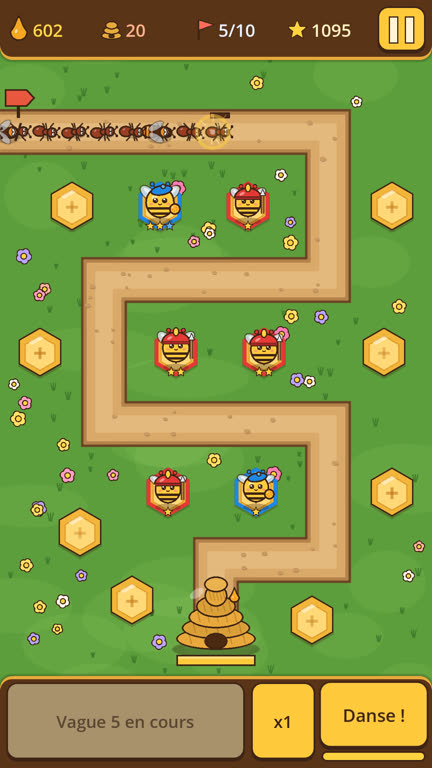
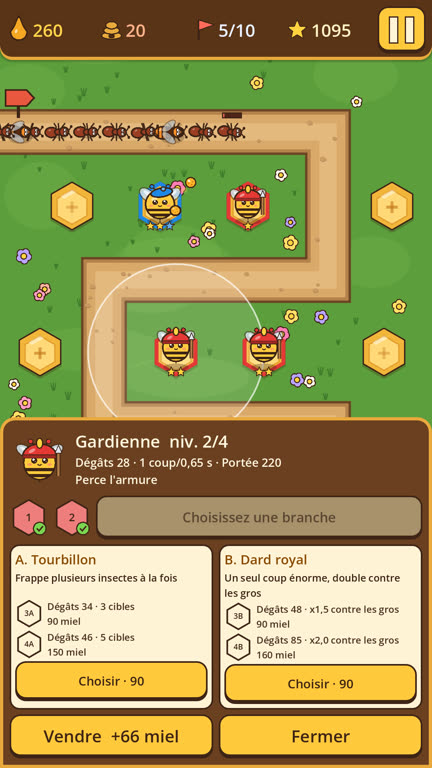
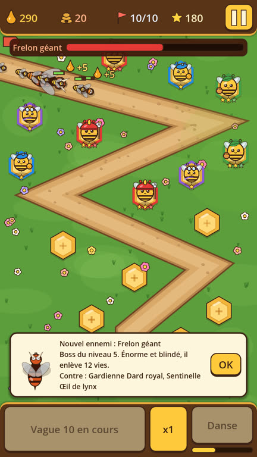

Des abeilles contre les insectes
Fourmis, guêpes et frelons suivent un chemin jusqu'à la ruche. Vous posez des abeilles sur les alvéoles autour du chemin pour les arrêter avant qu'ils l'atteignent. Le jeu se joue en portrait, d'une main.
Bientôt sur Google Play



Ce qu'il y a dans le jeu
- Dix niveaux, chacun sur sa carte, à jouer en Facile, Normal ou Difficile, puis un mode infini.
- Six abeilles qui se débloquent au fil des niveaux : la Gardienne frappe de près, l'Archère lance du pollen de loin, la Nourrice ralentit les insectes, la Ventileuse les repousse, la Sentinelle tire de très loin et la Butineuse rapporte du miel.
- Chaque abeille s'améliore avec du miel. À partir d'un certain cran, on choisit une branche sur deux, et l'autre se ferme pour cette abeille.
- Les abeilles gagnent de l'expérience en jouant, ce qui ouvre de nouveaux crans d'amélioration.
- Huit sortes d'insectes, dont deux boss, et un carnet qui garde la fiche de ceux que vous avez déjà croisés.
- Le jeu existe en français et en anglais.
Gratuit, avec des publicités
Le jeu est gratuit et sans achat intégré. Il affiche des publicités Google AdMob : une publicité plein écran toutes les deux parties terminées, jamais pendant une partie, et deux vidéos facultatives (du miel au départ, ou une seconde chance après une défaite). Il n'y a ni compte à créer ni serveur du jeu : vos records et réglages restent sur votre téléphone.
Le détail est dans la politique de confidentialité.
Contact
Une question, un bug : theochuzeville@gmail.com